Multi-View MoE：让路由偏好同时决定专家选择与专家输入
这篇论文由 Zelin Zhao、Tianchi Ma、Junyuan Shang、Shuohuan Wang 和 Dianhai Yu 撰写，一作主机构为百度 ERNIE 团队。论文于 2026 年 10 月 29 日首次提交 arXiv；PDF 页眉另标 10 月 28 日，本文以提交历史作为公开日期。唯一论文入口为 arXiv:2610.40577。本轮阅读完整二十页原文，未核验到独立代码或模型发布入口，不据此宣称开源。
稀疏专家模型在固定激活预算下，能力同时取决于选中了哪些专家，以及专家实际处理了什么表示。单一路由评分与经验专家效用排名的对齐有限，而先评估所有专家或分别计算多个输入视图又会增加成本；论文希望用更丰富的路由偏好同时改善这两个环节。
1. 背景和问题
稀疏 MoE 的基本承诺是用少量激活计算访问大量参数。对于一个 token，路由器从整个专家池中挑出少数专家，分别计算后加权聚合。模型总参数可以很大，但每个 token 实际执行的专家数受到预算限制。因此，扩充专家池不等于有效容量自动增加：如果路由器经常漏掉对当前 token 更有用的专家，新增容量可能只是留在存储中。论文把研究对象放在 LatentMoE 一类低维专家接口上，主干隐藏状态先降到较小的 latent 空间，专家在低维空间工作，聚合结果再升维。这一接口使共享输入投影成为一个清楚的干预位置，也让选择机制与输入机制能够分开比较。
传统设计通常让一个线性评分头负责专家排名。问题并不是线性头完全无法学习，而是硬 top-k 训练带来选择性反馈：未被选中的专家没有接收这个 token 的直接任务损失梯度，错误选择有可能持续强化。要判断是否存在这种问题，作者把所有专家都对一批 token 执行，再比较路由分数排名与专家输出的经验代理排名。这里必须保留一个认识边界：论文使用按专家平均范数归一化的输出 L2 范数，并没有逐个替换专家后观察最终答案质量，因此它是可计算的诊断代理，并非每个专家真实因果贡献的金标准。代理相关性偏低可以构成动机，但不足以单独证明原路由已经选错所有重要专家。
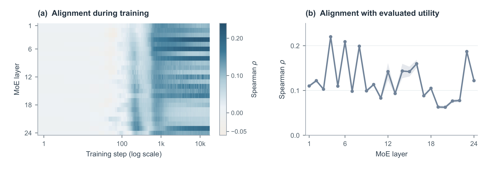
Figure 2 左侧把训练步放在横轴、二十四个 MoE 层放在纵轴，颜色表示 Spearman 排名相关性；横轴采用对数刻度，所以早期训练被展开，后期被压缩。右侧用二百零一个匹配记录汇总各层均值和标准差。多数层的相关性明显低于一，且中深层存在较低区段，说明仅凭单个评分头对专家排序，与归一化输出范数刻画的排序并不高度一致。读图时不能把深色等同于最终任务一定更好，也不能把相关性数值当成命中率：Spearman 衡量的是整体秩序一致性，既不直接给出 top-k 召回，也不测量生成答案的正确率。作者因此把后面的证据分成三层：训练损失和下游任务衡量最终效果，路由相关性衡量诊断变化，固定专家集合与输出门控的置换实验检验输入混合是否被模型真正使用。这种分层比仅报告“路由多样化”更有说服力，因为多个路由头即使相互不同，也可能只是产生无用噪声，必须再证明差异能参与预测。图中的归一化还排除了某些专家天然输出尺度较大所带来的部分偏差，但不能把这种处理误写成对所有语义重要性偏差的消除。
改进路由有几条直接路线，却各有成本。可以先部分执行专家，根据内部激活判断它是否适合当前输入；这样获得了更贴近专家计算的信号，却需为候选专家付出前置计算。也可以让同一专家分别处理多个视图，再混合输出；这种方式保留多种表示，但非线性专家被重复执行，抵消了稀疏模型对激活成本的控制。另一类负载均衡方法主要调节哪些专家被使用得过多或过少，目标与“为当前 token 提供几个互补的评分判断”不同。Multi-View MoE 选择的路线是增加较轻的路由头和共享投影，把昂贵的专家执行次数维持不变，同时让路由评分不再只用于选人。
论文提出的第二个问题更容易被忽略：即使两个专家都进入了 top-k，它们通常仍接收同一个 latent 向量。路由器可能认为专家甲适合当前输入的某一方面，专家乙适合另一方面，但这些偏好仅体现在输出权重中，专家看到的表示完全相同。作者希望把这种相对偏好提前用于输入构造，让“为什么选这个专家”影响“让它处理怎样的表示”。这不是为每个专家存一套完整投影矩阵，而是学习少量共享投影基，再用随 token 和专家改变的系数进行组合。共享专家池仍然存在，视图之间没有复制专家参数，工程约束与方法动机保持一致。
对大模型研究而言，本文关注的是预训练期间的条件计算接口，不能直接当作给已有稠密模型插入几个路由头便能免费提升的推理技巧。对推荐模型而言，它与多兴趣或多任务专家网络有概念联系，但论文没有推荐数据实验，也没有证明把兴趣向量分到多个专家就会获得点击收益。可以迁移的是一个更窄的研究问题：多个评分视角是否不仅改善专家选择，还能够成为低开销的输入条件化信号；评估时应同时查看任务质量、专家负载、表示变化和实际吞吐。尤其当不同业务信号共享专家池时，应检验多个路由是否只学到相同排序，以及输入混合是否比单纯增加一个门控层提供额外信息，而不能从语言模型均值增益直接外推线上排序结果。
论文与已有多头专家方法的差别也需要放回接口来看。把一个 token 切成多个子 token、为每个子 token 建独立专家池，与本文用多个完整隐藏状态投影共享同一专家池不是同一方案；前者改变专家的组织方式，后者改变每个选中专家看到的低维表示。用注意力头进行稀疏选择也不等于改变前馈专家的输入。本文并不声称首先提出多路由或多表示，而是把共享 latent 投影、多个非线性评分和专家专属输入混合接在一起，并用受控干预说明这个组合确有作用。对读者而言，这种定位有助于避免仅凭“多头”名称判断新旧：真正要比的是路由读取什么、投影是否共享、混合发生在专家前还是专家后、每次 token 执行几个专家，以及分发时到底传了多少向量。只有这些接口条件匹配，后面的同预算比较才有清晰含义。
2. 方法
2.1 多路由先评分后选择
LatentMoE 基线对隐藏状态作共享降维，所有选中专家接收同一向量，路由分数则来自完整隐藏状态。其专家分支可写为：
符号解释：$h\in\mathbb R^D$ 是当前 token 的主干隐藏状态，$P\in\mathbb R^{d\times D}$ 为共享降维矩阵，$z\in\mathbb R^d$ 是专家输入；$S$ 是选中专家集合，$E_i$ 是第 $i$ 个专家，$g_i$ 为其输出门控，$y$ 是待升维的聚合结果。主干随后把它升到原始宽度，并与始终激活的共享专家输出结合。Multi-Router 保留这里的共享输入，只改专家评分，以便把“多路由的贡献”与“输入条件化的贡献”区分开。
符号解释：$R$ 为路由头数，$w_i^{(r)}$ 为第 $r$ 个头对专家 $i$ 的评分参数，$\sigma$ 为 sigmoid，$\bar s_i$ 为聚合分数，$b$ 是专家负载均衡偏置，$k$ 为激活专家数。各路由独立初始化以打破对称，不额外加入多样性惩罚。关键是先让每个头经过非线性，再求和；若先把线性 logits 相加，结果仍等于一个线性评分器，无法保留多个非线性判断。求和允许某个专家因一个头的强支持入选，也允许多个头的中等支持共同累积。它没有要求各头分别选专家再取并集，最终仍只执行一次全局 top-k。
符号解释：$\alpha_i$ 是主干原有的可学习专家输出尺度，分母在已选专家之间归一化原始聚合分数。负载均衡偏置 $b$ 只影响选择，不进入这里的输出门控。这个区分避免把为了均衡使用率而人为补上的分数当作内容置信度。训练时任务损失沿选中专家、路由和共享投影回传；推理时同样使用评分、一次选择和聚合，没有额外教师或预扫描所有专家的步骤。
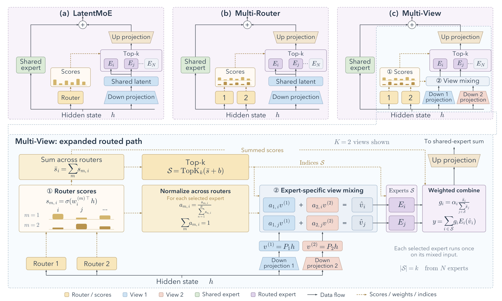
Figure 3 上排从左到右展示三个配置，蓝色共享 latent 在 Multi-Router 中仍然只有一个，因而中间配置的变化可以归因于评分路径的丰富化。右侧 Multi-View 才引入多个降维投影和输入混合。下排展开右侧虚框，黄色虚线携带分数、系数或索引，黑实线携带表示；读图时先沿左侧路由求分数，再沿上方执行求和与 top-k，最后沿下方投影视图进入蓝色混合模块。每个被选专家按自己的系数组合共享视图，紫色专家只运行一次，输出经过门控聚合后上投影。图中共享专家走另一条并行通路，并没有被多视图复制。这个结构解释了通信约束为何可以保持：在发往专家设备前就把多个视图混成一个 $d$ 维向量，每个 token–专家对仍只发送一个向量。如果先发送所有视图，再让目标设备混合，通信量就会随视图数扩大，不再满足论文的实现设定。图上只画两个视图和两个选中专家用于说明，不代表实际实验只激活两个专家；主实验是 top-8，两个路由头则与两个视图一一对应。
框架中还有两种不同的共享范围：降维投影在专家之间共享，专家参数则在视图之间共享。前者控制新增参数不随专家数成倍复制，后者控制同一个专家不因视图数增多而拆成多个独立网络。图上的输出加权也没有替代输入混合，两者可以同时存在且归一化维度不同。若实现时只增加评分头而保留一个共享向量，得到的是中间的 Multi-Router；若为每个头单独执行专家再汇总，则又走到了不同成本的多次专家评估。把这几个容易混淆的变体沿图逐一排除，才能准确理解后面额外零点五六个百分点均值收益对应哪条新增路径。
2.2 专家输入的路由条件混合
Multi-View 学习 $K$ 个共享降维投影，每个投影都读取完整隐藏状态。这里没有把隐藏通道切成互不相交的片段，专家也没有分配给不同视图。主方法让路由头与视图一一配对，即 $R=K$，对每个已选专家在路由维度归一化：
符号解释：$P_m$ 为第 $m$ 个视图投影，$v^{(m)}$ 是共享视图，$a_{m,i}$ 是视图 $m$ 对专家 $i$ 的输入混合系数，$\widehat v_i$ 是专家专属输入。对固定专家，所有系数非负且和为一，因而是共享视图的凸组合。这里的归一化方向与输出门控不同：前者固定专家、跨路由求和，后者跨选中专家求和。相同专家总分可以对应不同的视图比例，这一部分信息在求和后的分数里已经丢失，重新使用原始分量才把它保留下来。
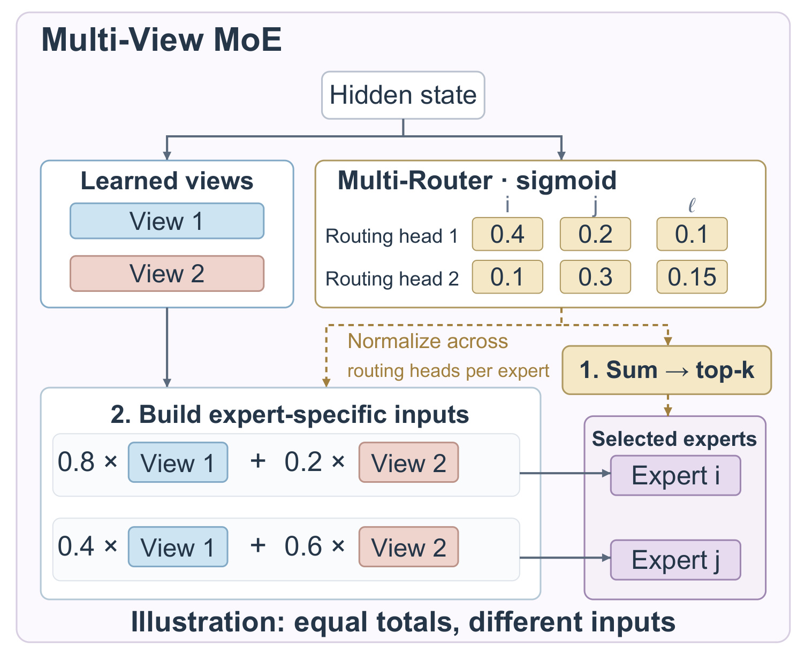
Figure 1 把这个差异简化到两个专家：专家 $i$ 获得分数 $(0.4,0.1)$，专家 $j$ 获得 $(0.2,0.3)$。两者总分都是 $0.5$，如果只看输出门控，不能分辨它们分别受哪个路由头支持；但跨头归一化后，前者混合比例为 $(0.8,0.2)$，后者为 $(0.4,0.6)$。同一个 token 因而可以给两个专家不同表示，而不是只改变专家输出的音量。图中第三个专家总分较低而未入选，说明多视图没有改变固定激活预算。该示例仅用于解释算子，负载均衡偏置设为零，也省略了共享专家和上投影，不能据此推断实际层输出大小。更重要的是，混合系数随 token 改变，也随专家改变：若所有专家共享同一组系数，虽然仍有 token 条件化，却丢失专家差异；若连系数都固定，多个投影可直接合并成一个固定投影。后面的置换实验正是围绕这两类退化情形设计，验证模型利用的不只是“多加了一个投影”带来的参数量，而是系数与 token、专家的对应关系。图内比例是输入权重，切勿把 $0.8$ 当作专家输出门控或最终任务贡献比例。完整聚合式为：
符号解释：$S,g_i,E_i$ 与前述定义相同，内层求和先形成专家输入，外层求和再合并专家输出。由于专家是非线性函数，先混输入再执行一般不等于对每个视图分别执行专家后混输出。前者维持每个专家一次前向，后者则要付出多次专家计算。等效投影可理解为随 token 和专家变化的投影基组合，但实现中只组合已算好的向量，不为每对 token 与专家物化一套矩阵。训练梯度能够通过非零混合系数流向各个共享视图，使专家输入投影与路由一起适应语言建模目标。
2.3 初始化与计算路径
为了避免突然改变专家输入，第一视图保留主干投影，其他视图从逐渐放大的扰动开始：
符号解释：$\Delta P_m$ 是新增投影的扰动参数，$\gamma(t)$ 为训练早期从零升至一的日程，$t$ 是训练进度。开始时所有视图等于基线投影，随后逐步放开差异，完成升温后不再约束各投影相同。这是缓和表示突变的初始化策略，不意味着路由头也保持完全相同；不同随机种子仍用于避免评分对称。作者指出该方式也可从已有 checkpoint 初始化视图，但本轮主要效果证据来自统一预算预训练比较，不能把可能的初始化方式当作充分验证的任意模型迁移结论。每层新增参数主要是额外路由和投影，可写成：
符号解释：$D,d$ 分别为主干和 latent 宽度，$N$ 为路由专家总数，$L$ 为 MoE 层数；公式假设主方法 $R=K$。新增一个投影需 $Dd$ 参数，新增一个路由需 $DN$ 参数，专家池本身不复制。对文中二十四层、$D=1024,d=512,N=256,K=2$ 的模型，新增约一千八百八十七万参数，约占总量 $0.19\%$。单独 Multi-Router 约增加 $0.06\%$，额外视图约增加 $0.13\%$，因此“轻量”是相对总参数量而言，不是没有内存或算术开销。
符号解释：$\Delta F$ 为论文给出的每层每 token 近似额外前向 FLOPs，$k$ 是选中专家数；前一项覆盖新增投影与评分矩阵乘，后一项覆盖输入混合，按一次乘加计两个 FLOPs。专家块 FLOPs 保持不变，但这些周边工作仍需执行。分发前混合保证传输向量数与宽度不变，不能同时推出总 FLOPs、运行时长、显存访问都完全不变。读代码或复现时应分别统计专家内核与路由投影内核，观察混合是否引入新的张量重排、临时缓冲和同步点，否则只看激活参数量会漏掉实际代价。
3. 实验结果
3.1 训练与九任务结果
主实验使用二十四层 10B-A1B 主干，路由专家总数二百五十六，每个 token 激活八个路由专家并有一个始终激活的共享专家。基线、Multi-Router 与完整 Multi-View 共享训练数据、七千零八十亿训练 token、主干和优化设置。两个路由头与两个视图是默认配置。下游结果来自同一预算的最终 checkpoint，不能与后面采用较早公共窗口的消融损失直接相减；后者用于比较机制，不是主结果的另一次等价评测。
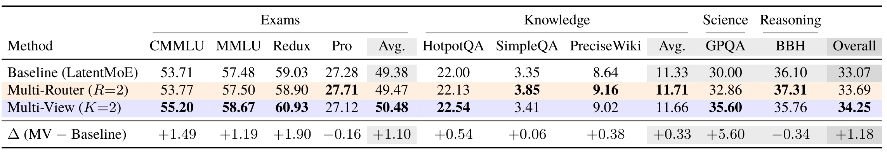
Table 1 将九个任务分成考试、知识、科学与推理几组，组内 Avg 和最终 Overall 都是无权平均，不按测试集样本数加权。基线均值为 $33.07$，Multi-Router 为 $33.69$，Multi-View 为 $34.25$；完整方法比基线增加 $1.18$ 个百分点，比多路由增加 $0.56$ 个百分点。最大单项增益出现在 GPQA，从 $30.00$ 提高到 $35.60$；MMLU-Redux 从 $59.03$ 到 $60.93$，CMMLU 从 $53.71$ 到 $55.20$。然而 MMLU-Pro 从 $27.28$ 降到 $27.12$，BBH 从 $36.10$ 降到 $35.76$。因此论文支持的是平均能力改善，不支持每项任务都受益。更细看，Multi-Router 在 SimpleQA、PreciseWiki 和 BBH 上还高于完整 Multi-View，说明输入调制并非对所有子能力单调有效。这里增加的是百分制分数的绝对差，不应写成“准确率相对提升百分之一点一八”，也不能把 GPQA 的 $5.60$ 个百分点外推成所有推理任务的提升。表格的价值在于把丰富路由和输入调制分别列出，读者能够看到后一个改动确实提供额外平均收益，同时也看到其代价可能体现为某些任务的回退，需要按照目标业务重新权衡。
知识组的读数还揭示了另一层异质性：完整方法在 HotpotQA、SimpleQA 和 PreciseWiki 相对基线分别只增加零点五四、零点零六和零点三八个百分点，远小于科学任务的增幅；知识组平均也略低于只用 Multi-Router 的配置。因而“加入输入视图后更会使用知识”不是这张表能直接支持的概括。表中各组任务难度和打分协议不同，无权平均是一种事先选定的汇总方式，不能解释为随机真实用户请求的期望正确率。对于把模型用于工具调用或专业问答的人，还需要先找与自己的错误分布相近的评测，再决定这些增益是否有意义。本轮没有重跑评测，表内小数精度来自论文，未独立验证其随机波动。
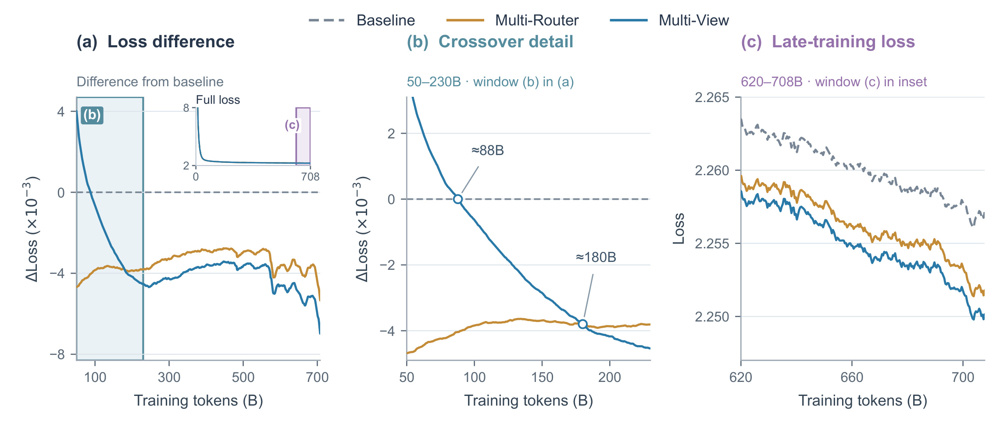
Figure 4 的左图绘制相对基线的损失差，零线以下表示更低；中图放大早期交叉区域，右图展示训练后段的绝对损失。Multi-View 初期落后于基线，约在八百八十亿 token 处越过零线，约在一千八百亿 token 附近追上 Multi-Router，此后逐步形成优势。这说明新增输入路径需要适应过程，不能用很短的预训练试跑就断言其最终优劣。末一千个未平滑步的均值分别为 $2.25621$、$2.25047$ 和 $2.24883$，完整方法相对基线减少约 $0.00738$，而不是图形放大后看起来的数量级大变化。图中曲线使用相同因果 EMA，跨度两千步，所有配置相同处理，视觉趋势可以比较；但曲线平滑不能替代多随机种子的统计检验。右图后段的持续分离与下游均值方向一致，提供一种一致性证据。它仍不能证明未来任意训练时长、模型规模或数据配方下都能保持相同收益，尤其新增视图早期有代价，训练预算较紧的团队需要单独检查自己的交叉点是否能在可承受预算内出现。
3.2 输入差异是否真正被使用
作者没有停留在“两个路由不同”的可视化，而是在最终 checkpoint 上检验输入变化。两路由 top-8 集合的 Jaccard 均值仅 $0.145$，top-1 一致率约 $11.2\%$，说明偏好确有分化。对同一个 token 的八个选中专家，共比较二十八对，测量视图比例差和混合输入距离。这样固定 token 后再看专家之间差异，避免把不同 token 本来就不同的隐藏状态误算为专家条件化效果。差异存在仍只是必要条件，下一步需要验证破坏这些对应关系会怎样。
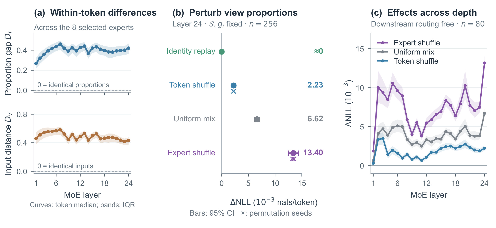
Figure 5 左列给出不同层的比例差 $D_r$ 和归一化输入距离 $D_v$，各层 token 中位数大致在 $0.27$ 至 $0.46$、$0.42$ 至 $0.58$，零代表完全相同。中列在末层固定选中集合和输出门控，只替换视图混合比例；因此损失变化不能简单归因于“换了专家”或“专家输出权重改变”。同一 token 内交换专家的混合比例，NLL 增加 $0.01340$ nats/token，百分之九十五序列 bootstrap 区间为 $[0.01256,0.01435]$；统一改成各一半增加 $0.00662$，跨 token 交换同一专家的比例增加 $0.00223$。三种干预均破坏不同关系，而专家置换伤害最大，支持模型确实使用了系数与专家身份的匹配。右列逐层施加干预，再允许后续层重新路由，所有层的专家置换与均匀混合区间都高于零。这里测得的是包含下游响应的总效应，不能把某层曲线峰值当成该层独立贡献大小。末层仅保留视图一或视图二还会分别增加约 $0.01881$ 和 $0.02042$，进一步说明两个分支均被使用。这些结果支持训练后模型依赖所学混合结构，却没有证明任意其他输入条件化方案都更差，也没有证明差异一定对应可命名的语义专家分工；那需要额外任务和表示分析。
3.3 路由代理与训练消融
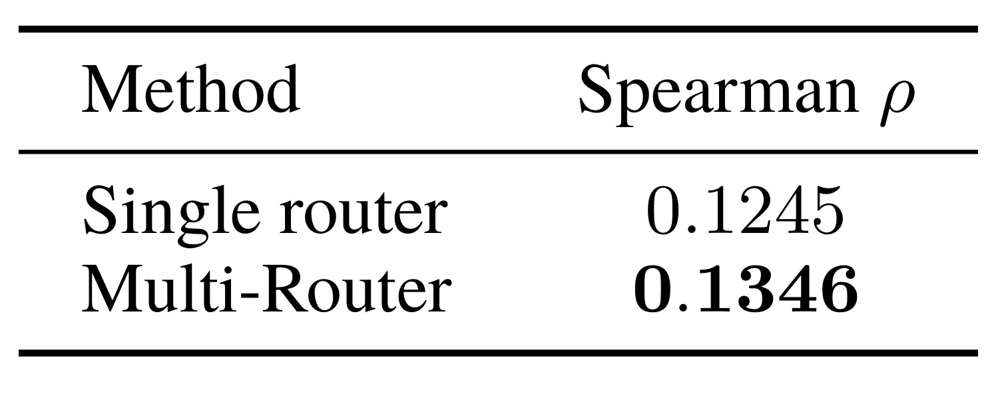
Table 2 汇总二百零一个匹配测量，单路由 Spearman 为 $0.1245$，Multi-Router 为 $0.1346$，相对增幅约 $8.1\%$。这个百分比的分母很小，所以应该同时看绝对增量约 $0.0101$，不能把它读成专家选择正确率增加八点一个百分点。测量时每个 token 让二百五十六个专家都处理同一个 latent 输入，专家输出范数再除以该专家在采样 token 上的平均范数；比较的是负载偏置加入前的路由分数与归一化输出范数的排名。它主要诊断 Multi-Router 的评分变化，并非完整 Multi-View 专家输入变化的全部机制。表格支持聚合多个头能提高这一特定代理上的一致性，但相关性本身仍然偏低，保留了大量尚未解释的差异。工程上可以据此把该诊断加入训练监测，却不应直接以最大化范数相关性替代语言建模目标，更不应把它作为下游能力的唯一验收指标。
还应注意，范数归一化按每个专家自身的平均输出尺度进行，而非把同一个 token 的全部专家归一到总和为一。因此它消除的是专家尺度差异的一部分，不能解释为任务奖励分布，也无法直接用来估算某个专家对损失的边际贡献。
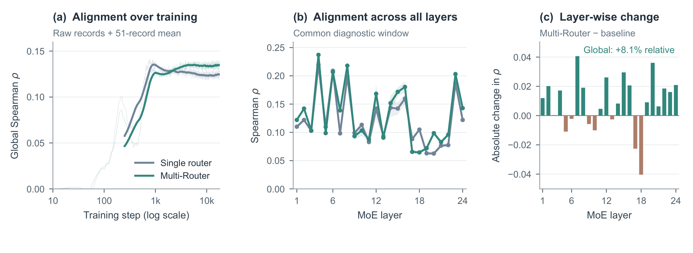
Figure 6 左侧显示全局相关性随训练上升，后期多路由略高；中间列出每层均值与标准差，右侧直接画多路由减单路由的绝对差。二十四层里十七层改善，但也有负向层，平均数并没有覆盖所有层的真实情况。第七层绝对增益最大，从 $0.0982$ 到 $0.1388$；第二十层相对增益最大，从 $0.0625$ 到 $0.0986$，约 $57.7\%$。这两个“最大”对应不同口径，不能混在一起，也不能将最大相对层增益宣传成模型整体改善近六成。图中平滑窗口与 Table 2 的汇总窗口共同限定了比较范围；中间曲线的尖峰说明专家输出范数与路由排名关系明显依赖层位。对复现而言，逐层输出比只看一个全局均值更有用，因为某些层可能因新路由发生回退，后续可检验是否应采用分层配置。本文并未完成这种自适应设计，因此它只是后续实验方向，不能写成论文已验证的更优方案。
这也提醒我们先区分绝对秩相关增量与相对改善，再查看低基数层的误差范围；层间起点不同，单个百分比会夸大视觉上的一致性。
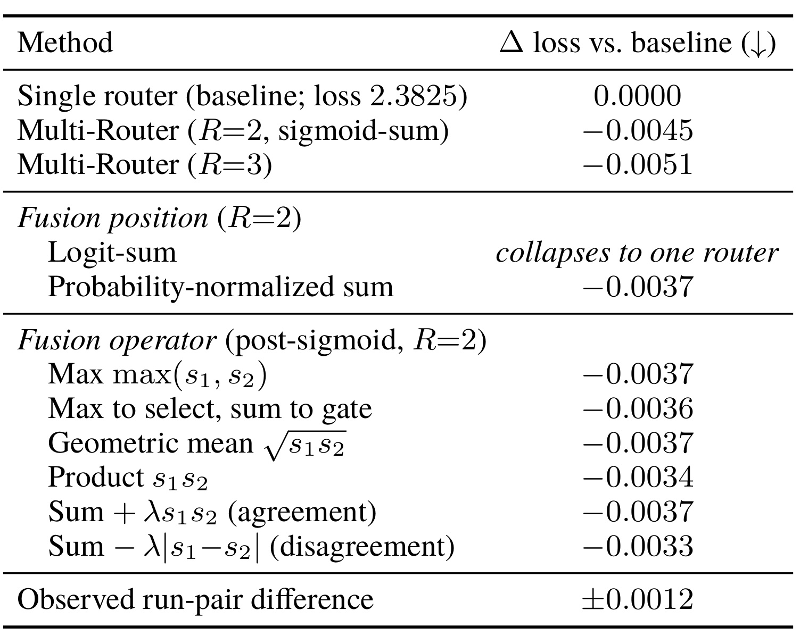
Table 3 的单路由公共消融基线损失为 $2.3825$，两个头 sigmoid 求和带来 $-0.0045$，三个头为 $-0.0051$。多一个头只再改善约 $0.0006$，小于作者观测到的两次近匹配运行最大差异 $0.0012$，所以不能宣布三头稳定更优。其余后 sigmoid 聚合包括最大值、几何均值、乘积和带一致性项的求和，损失变化约为 $-0.0033$ 至 $-0.0045$；这些算子都改善基线，但彼此差距落在运行差异范围内。先加 logits 后 sigmoid 在代数上折叠成一个路由，这是结构事实，不是一项略差的实验分数。表格还把“最大值用于选、求和用于 gate”单列，说明选择排序与输出权重可以分别干预。合理结论是多个非线性评分头有价值，求和简单且能自然提供后续混合系数；证据尚不足以给所有聚合算子建立稳定排名。对低成本消融应优先做多次重复并对齐 token 窗口，而不是把第四位小数当成架构发现。
这里的运行差异只来自一对近匹配运行，并不是跨全部算子的严格显著性界；正确用法是对微小差异保持克制，后续增加重复，而不是把小于该值的结果一律宣布完全相同。
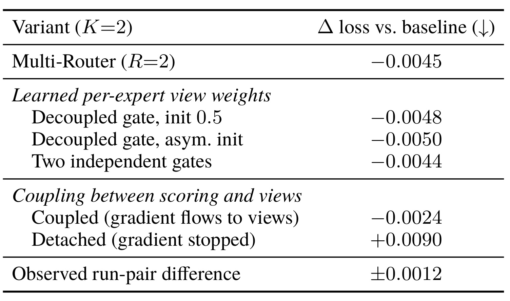
Table 4 上半部分用额外学习的每专家混合权重替代主方法的分数导出系数：对称初始化、非对称初始化、两个独立 gate 分别降低损失约 $0.0048$、$0.0050$ 和 $0.0044$，与多路由基线接近。它说明学习输入组合存在多种实现，不支持只靠这个表就认定某一种系数形式普适最优。下半部分研究另一个 view-fed 配置，评分与专家计算都读取视图；保留混合权重到视图的梯度时损失差为 $-0.0024$，阻断该梯度变成 $+0.0090$，相差 $0.0114$。固定参数时两者前向值不变，因此该对照突出的是训练梯度路径的重要性。然而这项耦合消融不等于主方法直接从完整隐藏状态评分的所有细节，不能把 detached 变差当作主 Multi-View 的唯一成功原因。表中保留运行差异行有助于区分较小参数化差异与较大梯度阻断影响：前者接近噪声，后者幅度明显更大。工程迁移时若为了省显存随意 detach 路由混合权重，可能改变所学表示，应把这种梯度裁剪作为真实方法变体重新验证。
3.4 参数、吞吐与边界
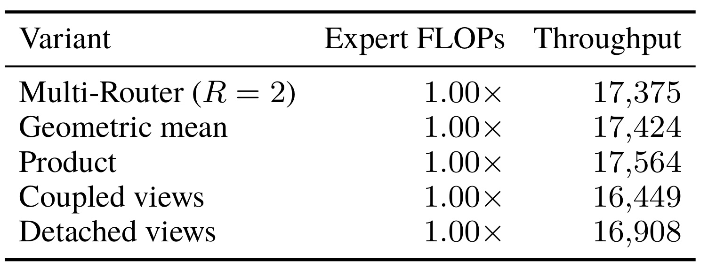
Table 5 位于附录，吞吐单位为每卡每秒 token，所有列出的配置都把专家 FLOPs 标为基线的 $1.00$ 倍。两头 Multi-Router 是 $17,375$，几何均值是 $17,424$，乘积是 $17,564$，view-fed coupled 和 detached 分别为 $16,449$ 与 $16,908$。它直观说明专家计算量保持不变时，完整训练执行仍会受周边计算和梯度路径影响，不能从“专家 FLOPs 不变”推出“吞吐完全相同”。同时表里没有列出一个明确与基线成对的主 score-derived Multi-View 最终训练吞吐结果，也没有给端到端在线推理延迟。因此只能把这些数字用于理解列出的消融配置，不能拼接成主方法无额外系统成本的结论。几何与乘积略快也不能脱离重复测量和硬件波动宣布系统优势。参数增加约 $0.19\%$ 是另一种成本口径，与这里的 token 吞吐互补；通信向量数量不变则是实现结构口径。这三类证据回答不同问题，实际部署仍需针对目标 batch、专家并行和序列长度进行完整 profile。
附录还给出架构表、融合算子曲线以及额外视图干预。架构表用于确认宽度、专家数与层数，融合曲线重复主文 Table 3 的比较，因此未重复插图。额外干预进一步细分视图比例与 token 分组，支持表示差异被使用，但没有改变主文的因果边界。本轮未运行作者训练，也未独立复现实验，所有数值均为原文报告。论文的优势在于把“最终任务改善”“评分诊断改善”“输入对应关系被使用”分别验证；不足则是模型规模和训练配方覆盖有限，主方法没有面向推荐或真实服务场景给出相同充分程度的结果。
4. 总结
我的判断是，Multi-View MoE 最值得带走的机制是把原本在求和后丢弃的路由分量，重新用作专家输入的条件化信号。多路由提供不完全相同的专家判断，先非线性后聚合避免退化为一个线性头；输入混合再利用这些判断，而不是另起一个不相关的 gate 网络。两步在接口上连得很紧，专家执行次数和分发向量大小保持不变，使它比逐视图重复执行专家更容易符合原有稀疏计算约束。固定专家集合与输出门控的置换实验尤其有价值，因为它直接检验模型是否使用混合系数的身份匹配，比单纯看路由热图更接近机制验证。
对推荐系统，可以围绕共享专家池中的多兴趣或多任务门控做小规模研究：先比较单头与独立 sigmoid 头聚合，再检验同一候选不同专家的输入是否确实不同，最后固定选择与输出权重进行置换。这个建议只是在复用实验设计，本文没有推荐指标，不能把语言任务的平均增益当作 CTR 或收入收益。对大模型训练，应该保留完整 token 预算与训练曲线，特别注意新增视图在早期落后、后期才超过多路由的现象；若训练预算不足，最终 checkpoint 的收益未必能出现。
局限需要分开理解。第一，输出范数是效用代理，较高相关性不是更好专家选择的充分条件，后续应补充基于损失变化或替换路径的诊断。第二，主效果来自一个 10B-A1B 配方，模型更大、路由更稀或数据分布改变后收益是否保留尚不清楚。第三，下游均值上涨同时存在 MMLU-Pro、BBH 回退，目标任务不能只看 Overall。第四，额外参数虽少，新增投影、路由评分和向量混合仍有真实成本，附录吞吐不足以证明主配置推理零开销。第五，消融中很多第四位小数差异低于观测到的运行差异，需要重复种子与置信区间支撑更细选择。
后续我会优先跟进三个问题。先核验是否发布训练代码和主配置 profile，确认分发前混合、归一化维度、负载偏置与输出尺度的处理能否一致复现，这是避免“实现了相近网络却不是同一机制”的基础。再在固定总训练预算下重复单路由、多路由、完整多视图三组实验，同时记录负向任务，以判断均值提升是否稳定。最后把固定专家与 gate 的混合置换复用于不同层和不同领域，观察系数是否能在分布外继续表达有用差异；若只在训练域有效，它可能成为另一种过拟合接口。相比立即堆更多路由头，回答这些问题更能确定该方法的可迁移范围。
这些跟进还需要成本与质量同步记录。比如重放干预要确认专家索引和输出门控在数值精度内固定，否则系数变化可能暗中改变选择，破坏受控对照；系统测试要同时给出路由投影耗时与专家执行耗时，才能判断瓶颈有没有转移。对于推荐门控的探索，则应把时间切分、负样本口径和任务权重固定，避免把数据处理差异归给新路由。本文提供了值得检验的接口设计与诊断方法，但目前最稳妥的结论仍限于已报告的语言模型设置和同预算对照，跨任务与跨系统的收益需要重新建立证据。